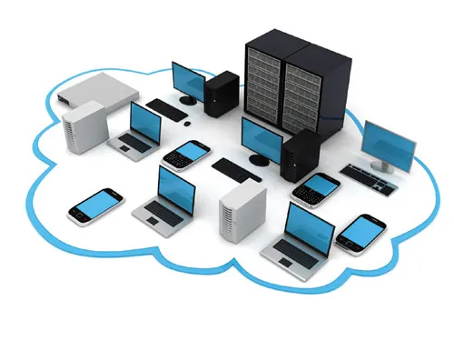

Notre solution de supervision de parc informatique est un service clé en main conçu pour optimiser et sécuriser l'infrastructure informatique de votre entreprise.
🔍 Objectifs Principaux
Monitoring en Temps Réel :
Surveillance continue de tous vos équipements
Détection immédiate des anomalies et dysfonctionnements
Analyse proactive des performances
Sécurité Renforcée :
Protection contre les menaces informatiques
Mises à jour automatiques des systèmes
Gestion des vulnérabilités
Optimisation des Ressources :
Rapport détaillé sur l'utilisation du matériel
Recommandations d'amélioration
Planification stratégique du renouvellement
💡 Avantages Concurrentiels :
Intervention rapide
Réduction des temps d'arrêt
Économies substantielles
Expertise technique dédiée
🚀 Modalités :
Adaptation à tous types d'entreprises
Personnalisation du service
Tarification flexible
Support technique 24/7
Votre infrastructure, notre expertise !

Service 2
Réparation d'Ordinateurs Portables et Fixes : Un Service Complet
🌟 Présentation du Service
Notre service de réparation d'ordinateurs portables et fixes est conçu pour répondre à tous vos besoins en matière de dépannage informatique. Que vous rencontriez des problèmes matériels ou logiciels, notre équipe d'experts est prête à restaurer vos appareils à un état optimal.
🔧 Types de Réparations Proposées
Réparations Matérielles :
.
Remplacement d'Écrans : Gestion des écrans cassés ou défectueux, avec un diagnostic préalable pour évaluer si seule la vitre ou la dalle entière doit être remplacée
.
Changement de Composants : Remplacement de pièces telles que batteries, disques durs, claviers, et cartes mères, en utilisant des pièces de haute qualité pour garantir la durabilité des réparations1
.
Nettoyage Interne : Service de nettoyage des composants internes pour éviter la surchauffe et améliorer les performances
.
Réparations Logicielles :
Dépannage Système : Résolution des problèmes liés aux systèmes d'exploitation, aux virus, et aux mises à jour nécessaires pour assurer un fonctionnement fluide
.
Récupération de Données : Services spécialisés pour récupérer des données perdues en cas de panne matérielle, avec un accent sur la sauvegarde régulière
.
💰 Coûts et Devis :
.Diagnostic Gratuit : Un diagnostic initial est souvent proposé sans frais, permettant d'identifier le problème avant toute intervention4
.
Tarification Transparente : Les coûts de réparation varient selon la nature de la panne et le temps nécessaire pour effectuer les réparations, généralement entre 40 et 70 € de l'heure3
.
🚀 Avantages de Notre Service :
Intervention Rapide : Réparations effectuées dans les meilleurs délais, avec possibilité d'interventions urgentes.
Expertise Technique : Une équipe expérimentée qui utilise des outils modernes pour un diagnostic précis et efficace.
Satisfaction Client : Engagement à fournir un service fiable avec des pièces de rechange de qualité pour assurer votre satisfaction.
Confiez-nous vos ordinateurs portables et fixes pour une réparation rapide et efficace !